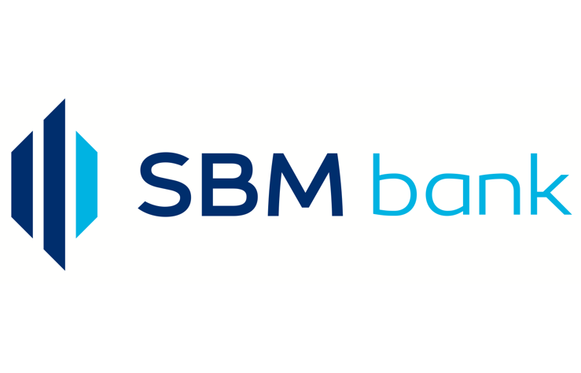

Our Clients



Home > Dark Fibre
Dark fiber refers to unused fiber-optic cable. Often times companies lay more lines than what's needed in order to curb costs of having to do it again and again. The dark strands can be leased to individuals or other companies who want to establish optical connections among their own locations.
In this case, the fiber is neither controlled by nor connected to the phone company. Instead, the company or individual provides the necessary components to make it functional.
We at FON offer very high price-performance for network users who require high performance, or wish to operate their own network for security or other commercial reasons.
Metro Dark Fibre network is our Fibre Solutions’ core product offering. We design solutions based on your needs and specifications.
Creating custom dedicated Dark Fibre networks is one of the ways we bring you the best communications network at industry-competitive prices.
Our dark fiber network employs a ring topology which means clients will have a redudant link to cater for downtime and give them uptime of upto 99% and therefore making their service more reliable.
We have a dedicated team on the ground that makes sure the down time period is within the SLA during fiber cuts and outages.
Our network coverage has been growing in the recent years in our core regions of operations:- Mombasa & Nairobi CBD
Trends like cloud computing, edge computing, and the Internet of Things (IoT) are increasing enterprise connectivity needs. That’s driving a growing number of organizations to investigate dark fiber as an alternative to commercial Internet service.
The primary reason why organizations begin investigating dark fiber is for the potential cost savings. “If your organization has a lot of data that they need to move around or if you happen to already have access to dark fibers for little or no cost, it will save you a lot of money to bring up your own dark fiber network as opposed to paying thousands or tens of thousands of dollars a month to some other Internet provider.
Another benefit of dark fiber is the potential speed. Whenever an organization is using commercial Internet service, traffic gets bounced around to a lot of different points before arriving at its destination. But with dark fiber, organizations can get a straight line from point A to point B, which improves performance
An even more important benefit for some organizations is the fact that dark fiber can provide physical redundancy for their existing systems.
FON offers backhaul solutions that cover diverse technical implementations, including Hybrid backhaul, Packet Only backhaul, SDH backhaul and Circuit Emulation Services (CES). The Hybrid backhaul is particularly ideal where all-IP networks have to interwork with existing TDM overlay networks.
It enables seamless migration to an all-IP network due to its ability to transport both TDM and IP/Ethernet natively.
To be able to support different Service Level Agreements applicable in the market, FON has outscourced the operations and maintenance of the FON network to Soliton Telmec.
All the deployment and field maintenance is done by Soliton as a subcontractor, in liaison the FON NOC(Network Operations Center) in an existing long term partnership.
By bringing in Soliton, the premier fiber deployment company in the region, FON is assured of expertise in the deployment and maintenance arena, enabling it focus on the higher needs of its clientele.
Copyright © All Rights Reserved